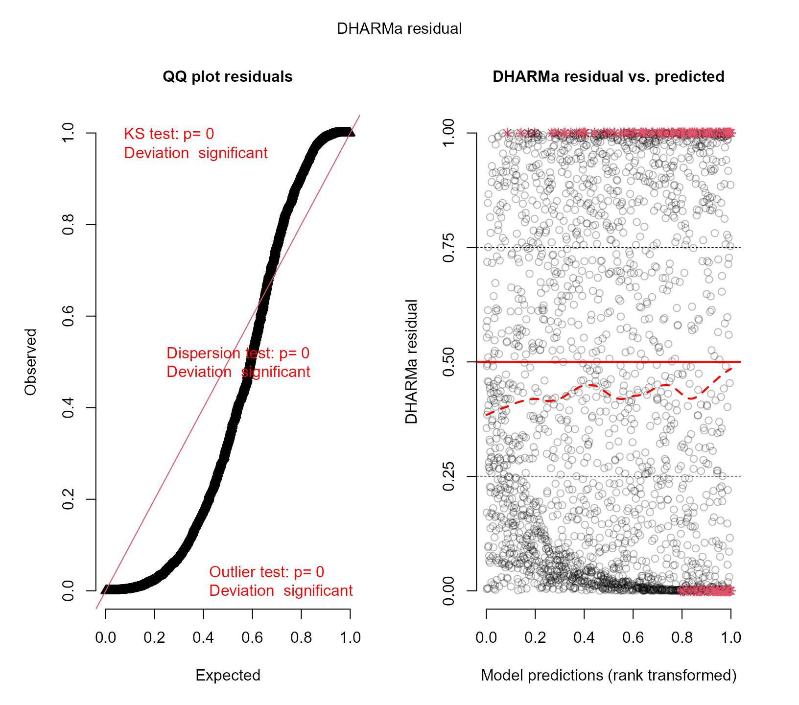
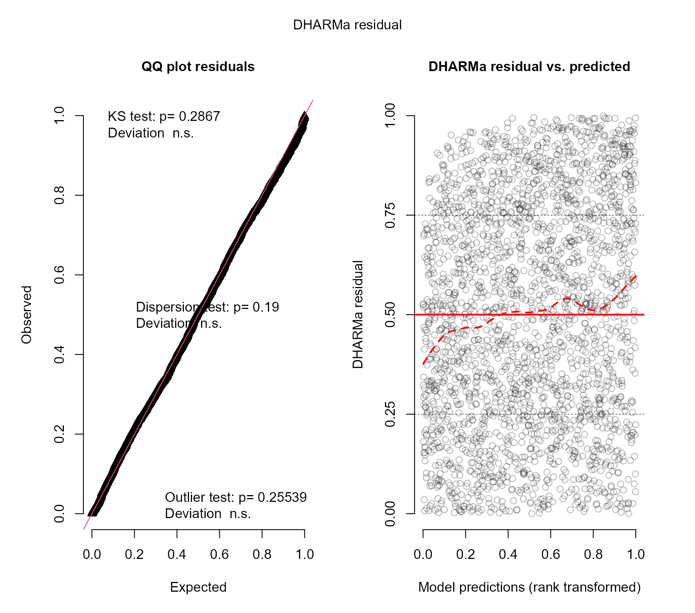

Goodness of Fit for MixMod Objects
Dimitris Rizopoulos
2018-12-16
Source:vignettes/Goodness_of_Fit.Rmd
Goodness_of_Fit.RmdGoodness of Fit using Simulated Residuals
In this vignette we illustrate how to evaluate the goodness-of-fit of mixed models fitted by the mixed_model() function using the procedures described in the DHARMa package.
Zero-Inflated Negative Binomial Longitudinal Data
We start by simulating a longitudinal outcome from a zero-inflated negative binomial distribution:
set.seed(123)
n <- 300 # number of subjects
K <- 8 # number of measurements per subject
t_max <- 5 # maximum follow-up time
# we constuct a data frame with the design:
# everyone has a baseline measurment, and then measurements at random follow-up times
DF <- data.frame(id = rep(seq_len(n), each = K),
time = c(replicate(n, c(0, sort(runif(K - 1, 0, t_max))))),
sex = rep(gl(2, n/2, labels = c("male", "female")), each = K))
# design matrices for the fixed and random effects non-zero part
X <- model.matrix(~ sex * time, data = DF)
Z <- model.matrix(~ 1, data = DF)
# design matrices for the fixed and random effects zero part
X_zi <- model.matrix(~ sex, data = DF)
Z_zi <- model.matrix(~ 1, data = DF)
betas <- c(1.5, 0.05, 0.05, -0.03) # fixed effects coefficients non-zero part
shape <- 2 # shape/size parameter of the negative binomial distribution
gammas <- c(-1.5, 0.5) # fixed effects coefficients zero part
D11 <- 0.5 # variance of random intercepts non-zero part
D22 <- 0.4 # variance of random intercepts zero part
# we simulate random effects
b <- cbind(rnorm(n, sd = sqrt(D11)), rnorm(n, sd = sqrt(D22)))
# linear predictor non-zero part
eta_y <- as.vector(X %*% betas + rowSums(Z * b[DF$id, 1, drop = FALSE]))
# linear predictor zero part
eta_zi <- as.vector(X_zi %*% gammas + rowSums(Z_zi * b[DF$id, 2, drop = FALSE]))
# we simulate negative binomial longitudinal data
DF$y <- rnbinom(n * K, size = shape, mu = exp(eta_y))
# we set the extra zeros
DF$y[as.logical(rbinom(n * K, size = 1, prob = plogis(eta_zi)))] <- 0Function for Scaled Simulated Residuals
Because DHARMa does not yet support objects of class MixMod (see here for current plants), we provide a wrapper function to enable the use of the procedures of the package:
resids_plot <- function (object, y, nsim = 1000,
type = c("subject_specific", "mean_subject"),
integerResponse = NULL) {
if (!inherits(object, "MixMod"))
stop("this function works for 'MixMod' objects.\n")
type <- match.arg(type)
if (is.null(integerResponse)) {
integer_families <- c("binomial", "poisson", "negative binomial",
"zero-inflated poisson", "zero-inflated negative binomial",
"hurdle poisson", "hurdle negative binomial")
numeric_families <- c("hurdle log-normal", "beta", "hurdle beta")
if (object$family$family %in% integer_families) {
integerResponse <- TRUE
} else if (object$family$family %in% numeric_families) {
integerResponse <- FALSE
} else {
stop("non build-in family object; you need to specify the 'integerResponse',\n",
"\targument indicating whether the outcome variable is integer or not.\n")
}
}
sims <- simulate(object, nsim = nsim, type = type)
fits <- fitted(object, type = type)
dharmaRes <- DHARMa::createDHARMa(simulatedResponse = sims, observedResponse = y,
fittedPredictedResponse = fits,
integerResponse = integerResponse)
DHARMa:::plot.DHARMa(dharmaRes, quantreg = TRUE)
}This function has the following arguments:
-
object: an object inheriting from classMixMod. -
y: the observed response vector. -
nsim: an integer indicating the number of simulated datasets; defaults is 1000. -
type: what type of fitted values and data to simulate, i.e., including the random effects or setting them to zero. -
integerResponse: logical; set toTRUEfor discrete grouped/cluster outcome data. Based on the chosen family when fitting the model, the function attempts to determine itself whatintegerResponseshould be. But for user-specified family objects, the user needs to define this argument himself/herself.
Poisson Mixed Model
We start by fitting a Poisson mixed model to the data using the following call to mixed_model():
fm1 <- mixed_model(y ~ sex * time, random = ~ 1 | id, data = DF,
family = poisson())We expect that this model will not fit the data well because it does not account for the overdispersion and the extra zeros we have simulated. To evaluate the fit we compare the simulated outcome data from the model versus the observed outcome data. If the model fits the data well, we would expect the observed outcome data to have the same empirical distribution as the empirical distribution of the simulated data. The following call to resids_plot() performs this comparison:
resids_plot(fm1, DF$y)
The left panel shows the QQ-plot of the observed versus expected residuals. According to the manner the scaled residuals are calculated in DHARMa, we expect these residuals to have a uniform distribution in the interval \((0, 1)\) for a well-specified model. The \(p\)-value reported in the plot is the one obtained from the Kolmogorov-Smirnov test for testing uniformity. The right panel shows the scatterplot of the residuals against the fitted values. To provide a visual aid in detecting deviations from uniformity in the y-direction, the plot of the residuals against the predicted values also performs a quantile regression, which provides 0.25, 0.5 and 0.75 quantile lines across the plots. These lines should be straight, horizontal, and at y-values of 0.25, 0.5 and 0.75. Note, however, that some deviations from this are to be expected by chance, even for a perfect model, especially if the sample size is small.
It is evident from these two plots that the Poisson model does not fit the data satisfactorily.
Zero-Inflated Poisson Mixed Model
To improve the simple Poisson model, allow for extra zeros using the zero-inflated Poisson mixed model. First, here we only include fixed effects in the linear predictor of the logistic regression for the extra zeros:
fm2 <- mixed_model(y ~ sex * time, random = ~ 1 | id, data = DF,
family = zi.poisson(),
zi_fixed = ~ sex)Using resids_plot() again we evaluate the fit this model:
resids_plot(fm2, DF$y)
We observe that the fit has improved, but still we have evident deviations from uniformity.
Zero-Inflated Poisson Mixed Model Extra Random Effects
We further extend the zero-inflated Poisson mixed model by also allowing for a random intercept in the linear predictor of the logistic regression for the extra zeros:
fm3 <- mixed_model(y ~ sex * time, random = ~ 1 | id, data = DF,
family = zi.poisson(),
zi_fixed = ~ sex, zi_random = ~ 1 | id)We check the fit with the simulated residuals:
resids_plot(fm3, DF$y)
There are still deviations from uniformity, indicating that the fit of the last model to the data is not optimal.
Zero-Inflated Negative Binomial Mixed Model Extra Random Effects
As a final attempt, we allow of overspersion by changing the Poisson distribution to the negative binomial distribution. The rest of the components remain the same:
fm4 <- mixed_model(y ~ sex * time, random = ~ 1 | id, data = DF,
family = zi.negative.binomial(),
zi_fixed = ~ sex, zi_random = ~ 1 | id)We check the fit with the simulated residuals:
resids_plot(fm4, DF$y)
We now observe that the fit of the zero-inflated model seems to be acceptable. The right panel still shows that the lines from the quantile regression are not horizontal, but as previously explained, these may potentially show deviations even for the correct model.